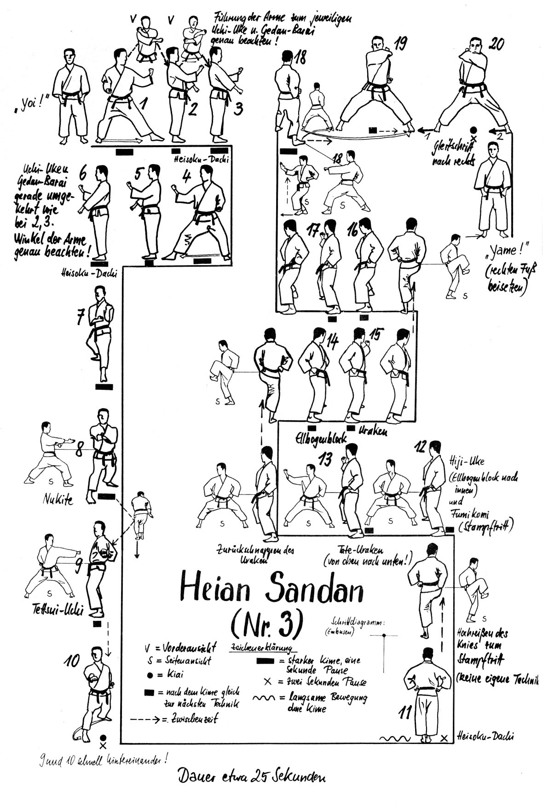

Heian Sandan

- Yoi (divaricando la gamba destra).
- Sposto la gamba sinistra verso sinistra e scendo in Kokutzu Dachi sinistro, Uchi Uke sinistro.
- Riunisco la gamba destra eseguendo contemporaneamente Uchi Uke destro (esterno) Gedan Barai sinistro e successivamente invertendo le braccia Uchi Uke sinistro (esterno) Gedan Barai destro.
- Ruotando i piedi vado in Kokutzu Dachi destro, Uchi Uke destro.
- Riunisco la gamba sinistra eseguendo contemporaneamente Uchi Uke sinistro (esterno) Gedan Barai destro e successivamente invertendo le braccia Uchi Uke destro (esterno) Gedan Barai sinistro.
- Ruoto di 90° verso sinistra e avanzo tre volte in Morote Uke in Kokutzu Dachi.
- Osae Uke sinistro e avanzo eseguendo Yohon Nukite destro in Zenkutsu Dachi.
- Ruoto sull’asse orizzontale la mano destra, Mawatte di schiena e vado in Posizione del Cavaliere di Ferro (Kiba Dachi) eseguendo contemporaneamente Tettsui Uchi orizzontale.
- Avanzo di un passo in Zenkutsu Dachi ed eseguo Oi Tzuki destro. Kiai.
- Richiamo la gamba sinistra in posizione a piedi uniti frontali (Heisoku Dachi) ruotando di 180° sul posto e porto i pugni al fianco con i dorsi rivolti in avanti.
- Eseguo tre volte partendo con la destra la sequenza: Parata a uncino fatta di piede (Mikazuki Geri) atterrando in Kiba Dachi, paro con il gomito (Empi Uke) ed eseguo Uraken Uchi.
- Incrociando le braccia frontalmente con il sinistro sopra, carico ed eseguo, lentamente e contratta, la parata/presa a mano aperta (Tate Shuto Uke) con il braccio destro.
- Avanzo ed eseguo Oi Tzuki sinistro.
- Richiamo la gamba destra e vado in Kiba Dachi.
- Ruoto di 180° ed eseguo un pugno montante (Uratzuki) con il braccio destro oltre la spalla sinistra e contemporaneamente una gomitata posteriore sinistra (Ushiro Empi Uchi).
- Mi sposto in linea verso destra eseguendo Uratzuki sinistro oltre la spalla destra e contemporaneamente Ushiro Empi Uchi destro. Kiai.
- Yame! Sposto la gamba sinistra e torno in posizione di Yoi!